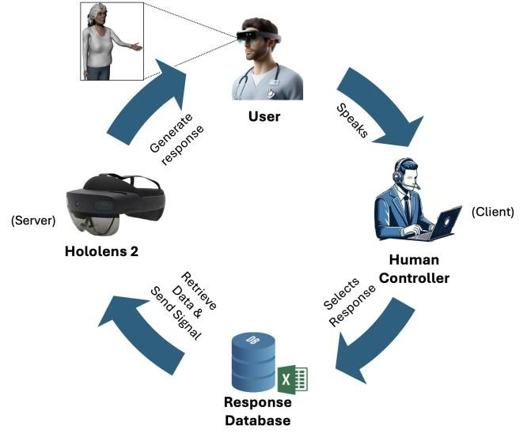

Publications · IEEE ISMAR 2024
System Usability and Technology Acceptance of a Geriatric Embodied Virtual Human Simulation in Augmented Reality
IEEE International Symposium on Mixed and Augmented Reality (ISMAR) 2024, pp. 594–603. Funded by NSF FW-HTF #2222661 / 2222662 / 2222663.
Caregivers put on a HoloLens 2 and talked with a life-sized virtual older adult who knew their name, noticed what they were wearing, and switched the lamp off when she asked them to. Sixteen nursing participants rated the system well above the usability benchmark, and every one of them finished the tasks.
Part of the project Embodied Virtual Human Simulation for Caregiver Training
At a glance
- System usability (SUS)78.4 / 100Benchmark is 68 · SD 12.04
- Perceived ease of use (TAM)89.1 %28.5 of 32 · SD 2.63
- Participants16Caregivers & nursing students, within-subjects
- Task completion100 %All tasks, both scenarios
Why it matters
The numbers that motivated the study, all reported in the paper’s introduction.
- >33%Turnover in geriatric care…
- up to 70%…and in skilled nursing facilities
- 67MPeople over 60 currently needing care
- 65MMore Americans turning 65 within two decades
Two of the most common causes of that turnover are a lack of communication skills and inadequate training — both soft skills, and both hard to rehearse on a mannequin.
What was built
A Unity 3D framework rendered on a Microsoft HoloLens 2, made of four parts.
3D model & animation
A realistic older woman modelled and rigged in Autodesk Maya, with blend-shape visemes for lip sync and expressions for happiness, sadness and surprise.
Response control
A Wizard-of-Oz GUI: a hidden human controller picks a reply from categorised button panels built automatically from a spreadsheet.
Emotion plugin
A custom Unity plugin over the SALSA LipSync suite that configures the SALSA and emoteR components automatically and fires expressions with each audio clip.
Simulated awareness
The virtual human controls IoT devices, greets users by name, comments on the colour of their clothes and recalls the earlier conversation.
- 778,092Vertices
- 1,496,271Edges
- 719,428Faces
- 67Skeleton joints
- 2048×2048Texture resolution
- TCP socketsHoloLens as server, PC as client
The study
Within-subjects, two scenarios in a mocked-up care room at the UCF College of Nursing. Approved by the IRBs at NJIT and UCF; each session ran about an hour.
Scenario 1 — unaware
Introductory conversation
- Participants introduce themselves and talk freely
- They encourage the virtual human to do an activity
- She asks them to switch the lamp off, and the radio on
Scenario 2 — aware
Same person, now with memory
- She greets each participant by name
- She comments on the colour of their outfit
- She turns the radio off herself at the start
- Participants tell her that her family will be late
- 16Participants (15 female, 1 male)
- 20.6 yrsMean age (SD 1.69, range 18–25)
- 10 / 4 / 2CNAs / nursing students / other roles
- 1 yr 5 moMean caregiving experience
- 7 of 16Had used AR or VR before
- 0.93Achieved statistical power (G*Power)
What the study found
Four measures: usability, acceptance, how long people stayed in the conversation, and what they said afterwards.
System Usability Scale — 78.4 against a benchmark of 68
One-sample Wilcoxon signed-rank test against the established average of 68: w = 17, p < 0.006. Scores range 0–100.
Data table
| Measure | Score |
|---|---|
| Mean SUS | 78.44 |
| Standard deviation | 12.04 |
| Minimum | 57.50 |
| Maximum | 100.00 |
| Reference average | 68.00 |
How the 16 ratings were distributed
Three quarters of participants placed the system above the 68-point average.
- 57.5–70
- 71–80
- 81–90
- 91–100
Data table
| SUS band | Share of participants |
|---|---|
| 57.5 – 70 | 25.0% |
| 71 – 80 | 37.5% |
| 81 – 90 | 12.5% |
| 91 – 100 | 25.0% |
Technology acceptance — perceived ease of use
Mean 28.5 of a possible 32 (89.1%). Significantly different from hypothesised means of 26 (w = 9.0, p < 0.006) and 27 (w = 18.0, p < 0.03).
- Scored 24–26
- Scored 27–29
- Scored 30–32
Data table
| TAM band (of 32) | Share of participants |
|---|---|
| 24 – 26 | 31.3% |
| 27 – 29 | 25.0% |
| 30 – 32 | 43.8% |
| Mean | 28.50 (SD 2.63) |
| Range | 25 – 32 |
Time spent with the virtual human
Dots are means; the bars span the shortest and longest session. Sessions were significantly shorter the second time round (Wilcoxon signed-rank, p < 0.05).
Data table
| Session | Mean | SD | Shortest | Longest |
|---|---|---|---|---|
| First | 7m 38s | 2m 10s | 5m 25s | 12m 19s |
| Second | 4m 44s | 1m 57s | 2m 12s | 8m 59s |
Replies the virtual human gave
Response counts logged from the controller’s button presses. The paper reads the drop as novelty and exploration in the first session giving way to a more familiar second one.
Data table
| Session | Mean | SD | Min | Max |
|---|---|---|---|---|
| First | 71 | 20 | 49 | 120 |
| Second | 49 | 20 | 27 | 96 |
In participants’ words
A thematic analysis of three open-ended questions.
“I liked how realistic the software was. It seemed more realistic than our simulation dummies used during simulation”
“The biggest negative was that she would pause when talking like she was done so then I would talk but it would turn out she wasn’t done and she would continue to talk over me.”
- Liked
Ease of use, interactivity, realism
Participants also singled out personalisation, visual and auditory clarity, the variety of responses and the focus on bedside manner.
- Found difficult
Awkward pauses and speech overlap
Some struggled to formulate questions, and wanted more specific answers and a clearer voice.
- Asked for
Movement, more events, more AI
Suggestions included letting the character move around, adding family members to the scene, putting the patient in bed, and objects to interact with.
- Response latency
1–3 seconds typically
A few early sessions saw 5–10 second delays while the human controller was still gaining practice.
Figures from the paper





Where it goes next
Takeaway
The simulation was rated user-friendly and highly acceptable by a group with no particular technical background, which matters, because AR training systems are increasingly aimed at caregivers and nursing students who are not AR users.
Named limitations: a pilot-sized sample of 16, an almost entirely female cohort, a first prototype with a limited response set, speech overlap, and a virtual human who cannot yet move around.
Planned next steps are a larger and more diverse study, a wider response set, and replacing the human-in-the-loop with an automated response controller trained on the interaction data collected here.